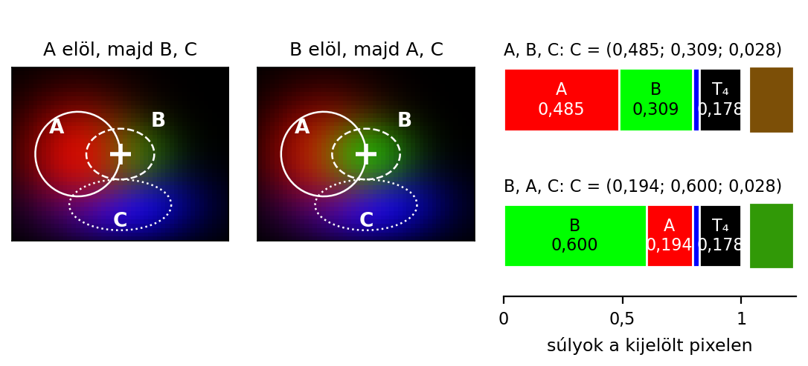
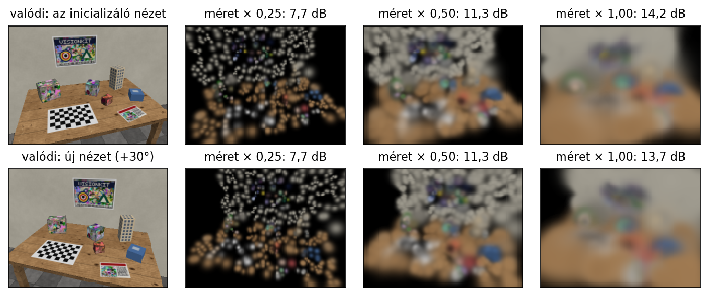

A Neurális megjelenítés: NeRF mezője szép új nézeteket ad, de lassan: minden pixel minden mintájához egy hálókiértékelés kell, és a minták nagy része üres levegőbe esik. Fordítsuk meg a gondolatot: ne a sugár mentén keressük, hol van anyag, hanem tároljuk explicit módon, és vetítsük a képre – ahogy a grafikus kártyák a háromszögeket rajzolják.
A 3D Gaussian splatting (3DGS) [S-3DGS] a jelenetet sok százezer vagy millió átlátszó, színes Gauss-ellipszoiddal írja le. Mindegyik a képen egy elmosódott ellipszis-folt („splat”, fröccsenés) lesz, és a foltok mélység szerint egymásra keverve adják a képet. Nincs háló, nincs sugár menti mintavétel, a megjelenítés valós idejű lehet, és az egész továbbra is differenciálható, tehát fényképekre illeszthető. Ebben az alfejezetben a három alapműveletet – vetítés, keverés, illesztés – végigszámoljuk, és kicsiben, NumPy-ban meg is valósítjuk.
Egy folt olyan, mint egy elmosódott szélű, áttetsző festékpötty a térben: a közepén a legsűrűbb, kifelé a Gauss-függvény szerint halványodik. Az alakja egy ellipszoid, így egy lapos, hosszú folt jól leír egy falrészletet, egy apró gömbölyű pedig egy sarkot. A kamera képén az ellipszoid közelítőleg ellipszis. Az interaktív ábrán forgathatod és nyújthatod az ellipszoidot, mozgathatod a kamera elé és mellé, és összevetheted a közelítő ellipszist a pontosan vetített mintapontokkal.
Definíció. Egy 3D Gauss-folt négy dologból áll: középpont , -as kovarianciamátrix , átlátszatlanság és szín . A folt „erőssége” egy pontban .
Szavakban: a Zaj, valószínűség és becslés a látásban Gauss-eloszlásának alakja, de normáló tényező nélkül: a közepén 1, és itt nem valószínűség, hanem alakleírás.
A -nak pozitív definitnek kell lennie, különben nincs ellipszoid. Ha a hat független elemét közvetlenül optimalizálnánk, egy gradienslépés könnyen elrontaná. Ezért ahol egységkvaternió (használat előtt normáljuk, lásd 3D forgatások és merevtest-transzformációk), az pedig a skálák logaritmusa. Tetszőleges esetén , tehát bármilyen paraméterérték érvényes foltot ad. Az az ellipszoid féltengelyeinek szórása. Ugyanígy egy szabad szám szigmoidja.
A szín a 3DGS-ben függhet a nézési iránytól: csatornánként gömbfüggvény-együtthatókat (spherical harmonics) tárolnak. A 0. fokú tag egy állandó szín, az 1. fokú három tag az irány lineáris függvénye, a magasabb fokok finomabb változást írnak le; fokig együttható kell csatornánként. A harmadfokú leírással egy folt szám.
A kamera pózával a középpont , a kovariancia – az eltolás a szórást nem változtatja. A perspektív vetítés nemlineáris, ezért Gauss vetülete nem pontosan Gauss. Ha a folt a mélységéhez képest kicsi, a vetítést a középpont körül linearizáljuk, ugyanazzal az elsőrendű hibaterjesztéssel, mint a Zaj, valószínűség és becslés a látásban alfejezetben. Ferdeség nélkül a a pontban számolva. A képtérbeli folt középpontja , kovarianciája Szavakban: a 3D szórást a vetítés helyi nagyítása képezi le. Az első két oszlop az nagyítás (távolabb kisebb folt). A harmadik oszlop azt mondja, hogy a mélységirányú kiterjedés is látszik, ha a folt nincs az optikai tengelyen: a látóirányra ferdén néző foltot oldalról is látjuk egy kicsit. A sajátvektorai az ellipszis tengelyei, a sajátértékek gyökei a féltengelyek.
A gyakorlatban
átlójához kis állandót adnak, hogy a pixelnél kisebb foltok ne tűnjenek
el (aliasing ellen; ellenőrizendő: a hivatkozott megvalósítás értéke). A
render.project_gaussian min_var argumentuma
ezt teszi.
Egy pixelen a -adik folt átlátszatlansága Szavakban: a folt a közepén erősségű, kifelé halványul. A foltokat a középpontjuk mélysége szerint növekvő sorrendbe rendezzük, és elölről hátra keverjük – pontosan a Neurális megjelenítés: NeRF alfa-kompozitálásával: A különbség csak az, honnan jön az : a NeRF-ben a sugár menti sűrűségből, itt a vetített folt alakjából. A sorrend számít: a következő ábrán ugyanaz a három folt A, B és B, A sorrendben más színt ad a kijelölt pixelen.

Ha minden pixelhez minden foltot kiértékelnénk, millió foltnál reménytelen volna. A megoldás a csempézés (tiling): a képet például pixeles csempékre osztjuk, minden foltot csak azokba vesszük fel, amelyeket a (néhány szórásnyi) befoglaló doboza érint, és csempénként egyszer rendezünk. Elölről hátra haladva a keverés korán abbahagyható, ha már elhanyagolható. A középpont mélysége szerinti rendezés közelítés: egymást metsző foltoknál a sorrend a kamera mozgásakor hirtelen megcserélődhet, ami vibrálásként látszik.
Kezdés. A foltok kiinduló helye az SfM ritka pontfelhője (Struktúra mozgásból (SfM): az inkrementális folyamat): minden pontba egy gömbölyű folt kerül, a pont színével, a szomszédok távolságából vett mérettel. Az alábbi ábrán a futó jelenet 500 felületi pontjából (alapigazságból, SfM helyett) így készült foltok látszanak – a méretet egy szorzóval változtatva.

Az új nézetből is ugyanaz a jelenet látszik, mert a foltok valódi 3D helyen vannak. De a méretszorzó kompromisszum: a kis foltok között lyukak maradnak (7,7 dB), a nagyok elmossák a textúrát. Érdekes, hogy a PSNR a lyukmentes, elmosódott változatnak ad több pontot (14,2 dB). Ezt optimalizálással kell megoldani.
Gradiens. A veszteség a kirajzolt és a fényképezett
kép eltérése (a [S-3DGS]
és SSIM-alapú tag súlyozott összegét használja, ellenőrizendő; mi a
négyzetes hibát). A keverés gradiense a már ismert
ahol
a
-adik
mögötti kompozitált szín. Innen a láncszabály visz tovább:
,
és hasonlóan a skálákra, a forgatásra, a színre és az
-ra;
3D-ben még a vetítés Jacobi-mátrixán keresztül. A
render.splat_loss_grad a 2D esetre mindezt kézzel számolja
(a tesztek numerikusan ellenőrzik).
Sűrítés és ritkítás. A rögzített számú folt rosszul oszlik el: a részletes helyeken kevés, a sima helyeken sok. A tanítás ezért időnként (a [S-3DGS] elve szerint, a küszöbök ott ellenőrizendők):
A render.fit_splats ennek 2D-s kicsinyített változata. A
cél a futó jelenet
-as
képe; a foltok itt eleve képsíkbeliek (paramétereik: helyzet, két skála,
szög, átlátszatlanság, szín), a mélységsorrend a tömbbeli sorrend.
Az eredmény 500 iteráció után: 16 rögzített folttal 21,84 dB, 16-ról sűrítéssel 64 foltig 24,15 dB, eleve 64 rögzített folttal 24,41 dB. Ebben a kis kísérletben tehát a sűrítés nem győzi le a sok folttal indulást: a véletlen kezdőhelyek itt egyenletesen lefedik a képet. A haszna ott jelenik meg, ahol a foltszámot nem ismerjük előre, és a kezdőpontok egyenetlenek, mint egy SfM-pontfelhőben (ezt itt nem mértük). A PSNR-görbe ugrásai az osztások pillanatai: az új foltok először rontanak, majd gyorsan beilleszkednek.
| szempont | NeRF | 3D Gaussian splatting |
|---|---|---|
| reprezentáció | implicit: háló súlyai | explicit: folthalmaz |
| megjelenítés | sugár menti mintavétel | vetítés és raszterizálás |
| sebesség | sok hálókiértékelés pixelenként | valós idejű is lehet (ellenőrizendő) |
| memória | kicsi (néhány MB, ellenőrizendő) | nagy: folt × 59 float ≈ 236 MB |
| szerkeszthetőség | nehéz (súlyok) | foltok törölhetők, mozgathatók |
| kezdés | véletlen súlyok | SfM-pontfelhő |
| geometria | sűrűségmező, felület kinyerhető | foltok, felület nem adott |
Mindkettő ugyanazt kéri bemenetnek (képek ismert pózokkal) és ugyanazt a képalkotási modellt, az alfa-kompozitálást használja. A 3DGS-t gyorsan fejlesztik tovább: tömörítés, felületkinyerés, aliasing elleni szűrés, mozgó jelenetek (ellenőrizendő: aktuális változatok). Alkalmazásai: virtuális bejárás, helyszínek dokumentálása, látványtervezés. Korlátai: sok memória, tükröző felületeken műtermékek, kevés nézetnél a Neurális megjelenítés: NeRF alfejezetben látott „lebegő” foltok. A fényképekből épített, fotószerű jelenet személyes adatot is tartalmazhat; erről az Etika, adatvédelem és szabályozás szól.
Továbbvitt eredmény. A Gauss-vetítés
(,
render.project_gaussian) és a mélység szerint rendezett
alfa-keverés (render.splat_2d) a Záróprojekt II: kis struktúra mozgásból
rekonstrukció kiegészítő feladatában a saját pontfelhőd új nézeteit
rajzolja ki.
Vetítés. Kamera: , , egységpóz. Folt: m, skálák m, forgatás a tengely körül .
A mélységirányú szórás a -os forgatást 22,3°-ra „húzta el”: a 4. lépés tagjai nélkül a szög pontosan volna.
Keverés. Egy pixelen három folt, elölről hátra: A (vörös, , a pixel 1 egységnyi Mahalanobis-távolságra: ), B (zöld, a pixel a közepén: ), C (kék, , 2 egységre: ). Fekete háttér: , , , a végső áteresztés , a szín . Ha B kerül előre: .
Vetítés a visionkit.render függvényeivel,
Monte-Carlo-ellenőrzéssel:
import numpy as np
from visionkit import render, scene, camera
K = scene.default_K()
q = camera.rotvec_to_quat(np.radians([0.0, 0.0, 30.0]))
Sigma = render.covariance_from_quat(q, [0.1, 0.05, 0.2])
m = np.array([0.4, -0.2, 2.0])
uv, cov2, Z = render.project_gaussian(m, Sigma, K)
a, b, th = render.ellipse_axes(cov2)
print("m2 =", np.round(uv, 1), " Z =", Z)
print("Σ2 =", np.round(cov2, 1).tolist())
print(f"féltengelyek {a:.1f} és {b:.1f} px, szög {np.degrees(th):.1f}°")
rng = np.random.default_rng(0)
for factor in (1.0, 0.25): # a folt mérete az eredetihez képest
X = rng.multivariate_normal(m, factor ** 2 * Sigma, 200_000)
pix = X @ K.T
pix = pix[:, :2] / pix[:, 2:]
mc = np.cov(pix.T)
rel = np.linalg.norm(mc - factor ** 2 * cov2) / np.linalg.norm(factor ** 2 * cov2)
print(f"méret × {factor}: a linearizált Σ2 relatív eltérése a mintától {rel:.1%}")m2 = [419.5 189.5] Z = 2.0
Σ2 = [[607.8, 153.0], [153.0, 298.4]]
féltengelyek 25.9 és 15.3 px, szög 22.3°
méret × 1.0: a linearizált Σ2 relatív eltérése a mintától 3.9%
méret × 0.25: a linearizált Σ2 relatív eltérése a mintától 0.3%A linearizálás hibája a folt relatív méretével (itt , illetve 2,5%) gyorsan csökken. Miért kell a paraméterezés, és hogyan keverünk:
bad = np.array([[1.0, 0.9], [0.9, 1.0]])
bad[0, 1] += 0.2; bad[1, 0] += 0.2 # „gradienslépés” a mátrix elemein
good = render.covariance_2d(np.log([1.4, 0.3]) + 0.2, 0.8)
print("közvetlen elemek sajátértékei:", np.round(np.linalg.eigvalsh(bad), 2))
print("R S² Rᵀ sajátértékei :", np.round(np.linalg.eigvalsh(good), 2))
alpha = np.array([0.8 * np.exp(-0.5), 0.6, np.exp(-2.0)])
colors = np.eye(3)
for order in ([0, 1, 2], [1, 0, 2]):
res = render.alpha_composite(alpha[order], colors[order], background=0.0)
print("sorrend", order, " szín", np.round(res["color"], 4),
" háttérsúly", round(float(res["trans"][-1]), 4))közvetlen elemek sajátértékei: [-0.1 2.1]
R S² Rᵀ sajátértékei : [0.13 2.92]
sorrend [0, 1, 2] szín [0.4852 0.3089 0.0279] háttérsúly 0.178
sorrend [1, 0, 2] szín [0.1941 0.6 0.0279] háttérsúly 0.178Az illesztés kicsiben (-es célkép, néhány másodperc):
R, t = scene.default_pose()
target = scene.render(R, t, size=(24, 32), ss=3)["image"]
run = render.fit_splats(target, 6, iters=200, densify_every=40, densify_until=120, n_new=6)
for k in (0, 40, 80, 120, 199):
print(f"iteráció {k:3d}: {run['count'][k]:2d} folt, "
f"PSNR {-10 * np.log10(run['loss'][k]):5.2f} dB")
print("(iteráció, törölt, osztott, klónozott):", run["events"])iteráció 0: 6 folt, PSNR 10.72 dB
iteráció 40: 12 folt, PSNR 18.58 dB
iteráció 80: 18 folt, PSNR 20.46 dB
iteráció 120: 24 folt, PSNR 21.13 dB
iteráció 199: 24 folt, PSNR 26.25 dB
(iteráció, törölt, osztott, klónozott): [(40, 0, 6, 0), (80, 0, 6, 0), (120, 0, 6, 0)]A foltszám lépcsőkben nő, a PSNR pedig mindegyik után tovább emelkedik. Végül a csempézés nyeresége és a memóriaigény:
g = render.unpack_splats(run["params"])
tiles = render.tile_lists(g["means"], g["covs"], target.shape[:2], tile=8, n_sigma=3)
per_tile = [len(ids) for row in tiles for ids in row]
print(f"{len(per_tile)} csempe, folt/csempe átlag {np.mean(per_tile):.1f} "
f"a {len(run['params'])} közül")
floats = 3 + 4 + 3 + 1 + 3 * 16
print(f"{floats} float/folt; 1 millió folt: {floats * 4 * 1e6 / 1e6:.0f} MB")12 csempe, folt/csempe átlag 15.2 a 24 közül
59 float/folt; 1 millió folt: 236 MBIlyen apró képen a dobozok sok csempét érintenek, a megtakarítás szerény; valós jelenetben, ahol egy folt a képhez képest parányi, a csempénkénti lista a teljes foltszám töredéke.
nan-ba fut.
Ok: a
elemeinek közvetlen optimalizálása, nem pozitív definit mátrix; vagy
nulla méretű vetület. Javítás: forgatás–skála
paraméterezés, kis állandó
átlójára, a kamera mögötti foltok kihagyása.render.splat_2d
eredményével véletlen foltokon.figures/data/cv064_splat_raszter.npz, s500)
hagyd abba pixelenként a keverést, ha
.
A folt-kiértékelések hány százaléka marad el, és mekkora a legnagyobb
színhiba?A 3D Gaussian splatting a jelenetet explicit, átlátszó Gauss-ellipszoidokkal írja le; a kovariancia forgatás és skála alakban mindig érvényes. A vetületet a perspektív vetítés linearizálása adja: , amely a mélységhez képest kis foltokra pontos. A képet a mélység szerint rendezett foltok elölről hátra végzett alfa-keverése adja, ugyanazzal a képlettel, mint a NeRF-ben; csempézéssel gyors. A paramétereket fotometrikus veszteséggel illesztjük SfM-pontfelhőből indulva, sűrítéssel és ritkítással. A NeRF-hez képest gyors és szerkeszthető, de memóriaigényes. A Gauss-vetítést és az alfa-keverést a rekonstrukciós záróprojekt használja.
1. A szórás px, -nél 10 px.
2. . Fordítva: zöld, vörös, háttér: .
3. , és ortogonális, invertálható, ezért ez csak esetén nulla. Elsőfokú gömbfüggvényekkel szám.
4. harmadik oszlopa , ezért : vízszintes, 25 px szórású szakasz. A nulla szélesség miatt kell a átlójára tett kis állandó.
5. és 6.
rng = np.random.default_rng(1)
means = rng.uniform(0, 15, (8, 2))
covs = render.covariance_2d(np.log(rng.uniform(1, 5, (8, 2))), rng.uniform(0, 3, 8))
col, op, depth = rng.random((8, 3)), rng.random(8), rng.random(8)
res = render.splat_2d(means, covs, col, op, (16, 16), depth=depth)
p = np.array([9.0, 4.0]) # (u, v)
C, T = np.zeros(3), 1.0
for k in np.argsort(depth):
d = p - means[k]
a = op[k] * np.exp(-0.5 * d @ np.linalg.solve(covs[k], d))
C, T = C + T * a * col[k], T * (1 - a)
print("5.:", np.allclose(C, res["image"][4, 9]))
s500 = np.load("figures/data/cv064_splat_raszter.npz")["s500"]
g = render.unpack_splats(s500)
full = render.splat_2d(g["means"], g["covs"], g["colors"], g["opacities"], (48, 64))
T_before = 1.0 - np.cumsum(full["weights"], axis=-1) + full["weights"]
used = T_before >= 0.05 # eddig a foltig még nem álltunk le
early = (full["weights"] * used) @ g["colors"]
print(f"6.: kimaradó kiértékelés {1 - used.mean():.1%}, "
f"legnagyobb színhiba {np.abs(early - full['image']).max():.4f}")5.: True
6.: kimaradó kiértékelés 17.6%, legnagyobb színhiba 0.0405A korai leállás a hátsó foltok kiértékeléseinek egy részét megspórolja. A hiba itt (fekete háttérnél) legfeljebb a küszöb, 0,05, lehet, mert az elhagyott tagok együttes súlya nem nagyobb a megállás pillanatában maradt áteresztésnél.